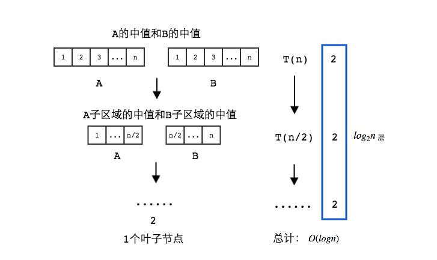
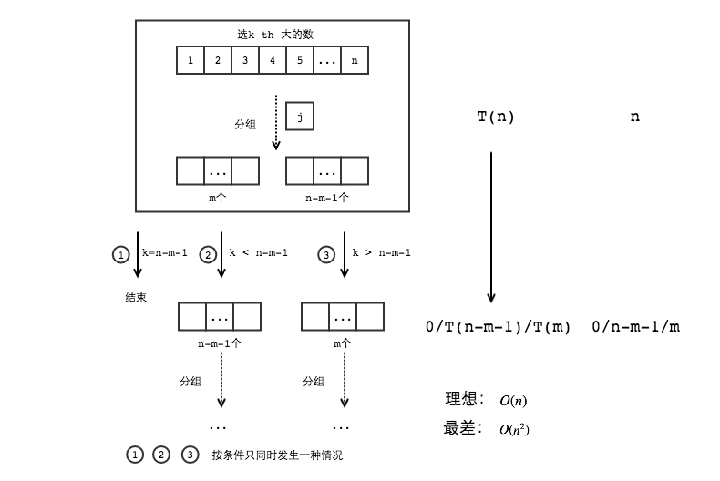

You are interested in analyzing some hard-to-obtain data from two separate databases. Each database contains n numerical values, so there are \(2n\) values total and you may assume that no two values are the same. You’d like to determine the median of this set of \(2n\) values, which we will define here to be the \(n^{th}\) smallest value.
However, the only way you can access these values is through queries to the databases. In a single query, you can specify a value k to one of the two databases, and the chosen database will return the \(k^{th}\) smallest value that it contains. Since queries are expensive, you would like to compute the median using as few queries as possible.
Give an algorithm that finds the median value using at most \(O(log n)\) queries.
令分离的两个数据库分别为\(A\)和\(B\)。
基本思路：所求的中值必然在\(A\)的中值和\(B\)的中值之间。基于此，可以划分子问题，子问题也满足同样的规律。
算法：
\(Median(A, low1, high1, B, low2, high2):\)
k1 = (low1 + high1) / 2; // k1 is the index of median
1. k2 = (low2 + high2) / 2;
median1 = Query(A, k1);
median2 = Query(B, k2);
if Median1 < Median2 then
if low1 == high1 && low2 == high2 then
return median1;
else
if (high1 - low1) is even
return Median(A, k1, h1, B, l2, k2);
// make sure left part and right part have equal number of elements
else
return Median(A, k1 + 1, h1, B, l2, k2);
else
if low1 == high1 && low2 == high2 then
return median2;
else
if (high1 - low1) is even
return Median(A, l1, k1, B, k2, h2);
// make sure left part and right part have equal number of elements
else
return Median(A, l1, k1, B, k2 + 1, h2);

根据归纳法定义，算法正确。
每次只会产生一个子问题，问题的大小减半，每个子问题中使用两次查询。所以有：
\[
T(n) =
\begin{cases}
2, & {n=1} \\
T(n/2)+2, & {n \ge 2}
\end{cases}\\
\]
根据主定理，有：\[T(n) = O(logn)\]
Find the \(k^{th}\) largest element in an unsorted array. Note that it is the \(k^{th}\) largest element in the sorted order, not the \(k^{th}\) distinct element.
INPUT: An unsorted array \(A\) and \(k\).
OUTPUT: The \(k^{th}\) largest element in the unsorted array \(A\).
基本思路：基于快速排序思想的快速选择方法。首先随机选择一个数作为轴点，所有的数与这个轴点进行比较，分为大小两组。则会出现三种情况：
1. 大于轴点的数有\(k-1\)个，返回这个轴点
2. 如果大于轴点的数大于\(k-1\)个，递归调用返回大的那组的第\(k\)大的数
3. 如果大于轴点的数小于\(k-1\)个，令大的那组个数为\(m\)，递归调用返回小的那组的第\(k-m-1\)大的数。
算法：
\(QuickSelect(A, k)\)
if |A| == 1 and k == 1 then
return A[1];
else
ERROR;
end if
choose a splitter A[j] randomly;
for i = 0 to n - 1 do
if i != j then
Put A[i] in S− if A[i] < A[j];
Put A[i] in S+ if A[i] >= A[j];
end if
end for
if |S+| == k then
return A[j];
else if |S+| > k then
return QuickSelect(S+, k);
else
return QuickSelect(S-, k - |S+| - 1);
end if

综上所述，根据双重归纳法定义可以证明该算法正确。
与快速排序运行时计算方式同理，可得：
Consider an n-node complete binary tree \(T\), where \(n = 2^d − 1\) for some \(d\). Each node \(v\) of \(T\) is labeled with a real number \(x_v\). You may assume that the real numbers labeling the nodes are all distinct. A node \(v\) of \(T\) is a local minimum if the label \(x_v\) is less than the label \(x_w\) for all nodes \(w\) that are joined to \(v\) by an edge.
You are given such a complete binary tree \(T\) , but the labeling is only specified in the following implicit way: for each node \(v\), you can determine the value \(x_v\) by probing the node \(v\). Show how to find a local minimum of \(T\) using only \(O(log\,n)\) probes to the nodes of \(T\) .
基本思路：对于寻找一个局部最小点的问题，可以转化为探究每个节点的值和两个叶子节点值的最小值，即\(min(this, leave_l, leave_r)\)。如果该节点值为最小，返回该节点为局部最小点。否则，探究值最小的那个节点。
算法：
- root 表示根节点
- this表示当前节点，this->left表示当前节点的左叶子节点，this->right表示当前节点的右叶子节点
- porbe(node)返回该节点的值
- min(a,b,c)返回a,b,c三个节点中值最小的节点
- \(FindLocalMin(node)\)返回以node为根节点的一个局部最小点，\(FindLocalMin(root)\)即为所求
\(FindLocalMin(node)\)
if node has no leave then
return node;
min_node = min(node, node->left, node->right);
if min_node == node then
return node;
else
return FindLocalMin(min_node);
\(min(a, b, c)\)
valuea = probe(a);
valueb = probe(b);
valuec = probe(c);
minimum = a;
min_value = valuea;
if valueb < min_value then
minimum = b;
min_value = valueb;
if valuec < min_value then
minimum = c;
return minimum;
根据归纳法定义，算法正确。
每次产生一个子问题，每个子问题需要进行三次probe，即获取三个节点的值，有：
\[
T(n) =
\begin{cases}
1, & {d=1} \\
T(n\,/\,2)+3, & {d \ge 2}
\end{cases}\\
(n = 2^d - 1)
\]
根据主定理，可得：
\[T(n)=O(log\,n)\]
The attached file Q8.txt contains 100,000 integers between 1 and 100,000 (each row has a single integer), the order of these integers is random and no integer is repeated.
Write a program to implement the Sort-and-Count algorithms in your favorite language, find the number of inversions in the given file.
In the lecture, we count the number of inversions in O(n log\,n) time, using the Merge-Sort idea. Is it possible to use the Quick-Sort idea instead ?
If possible, implement the algorithm in your favourite language, run it over the given file, and compare its running time with the one above. If not, give a explanation.
from random import randint
def sort_and_count(array):
""" Use Merge-Sort Idea to count inversions.
:param array: target for inversions counting
:return:
inversion_count: count of inversion pair in array
array_sorted: array sorted from small to large
"""
size = len(array)
# Stop condition of recursive call:
# 1. When array only contains one element, number of inversions is 0
# and return itself.
if size == 1:
return 0, array
# 2. Compare them when array contains two elements
# if contains a inversion, reverse two elements and number set to 1.
if size == 2:
if array[0] > array[1]:
return 1, [array[1], array[0]] # or array.reverse()
else:
return 0, array
# Divide array into left and right parts from the middle.
split_location = size / 2
array_left = array[:split_location]
array_right = array[split_location:]
# Recursively call to sort_and_count left and right parts.
count_left, array_left_sorted = sort_and_count(array_left)
count_right, array_right_sorted = sort_and_count(array_right)
# Merge after recursively call.
count_merge, array_sorted \
= merge_and_count(array_left_sorted, array_right_sorted)
# Sum the inversion count of three parts.
inversion_count = count_left + count_right + count_merge
return inversion_count, array_sorted
def merge_and_count(array_x, array_y):
""" Merge two sorted array with order and count the number of inversions
:param array_x: sorted array from small to large order
:param array_y: sorted array from small to large order
:return:
merge_inversion_count: number of inversions between array_x and array_y
array_sorted: merge array_x and array_y into one array with order from
small to large
"""
size_x, size_y = len(array_x), len(array_y)
index_x = index_y = 0
merge_inversion_count = 0
array_sorted = []
while True:
# In this situation, there is no element hasn't been compared
# in array_x, merge the elements reserved in array_y
if index_x >= size_x:
array_sorted += array_y[index_y:]
break
# Like the situation above.
if index_y >= size_y:
array_sorted += array_x[index_x:]
break
# Compare element of array_x and array_y and put smaller element into
# sorted array.
# When put an element of array_y into array_sorted, it means every
# element reserved in array_x is bigger than it. Additional
# array_x_reserved_count inversions.
if array_x[index_x] < array_y[index_y]:
array_sorted.append(array_x[index_x])
index_x += 1
else:
array_sorted.append(array_y[index_y])
merge_inversion_count += size_x - index_x
index_y += 1
return merge_inversion_count, array_sorted
# Read file and return an array
def read_file(file_path):
f = open(file_path, 'r')
content = f.readlines()
array = map(int, content)
return array
# Run the algorithm
arr = read_file('./Q8.txt')
print sort_and_count(arr)[0]
2500572073
因为在对元素进行比较分组时，改变了元素的位置，而因改变位置的同时，逆序数数量发生了变化，变化的大小无法获取。所以无法使用快速排序的思想解决问题。
Implement the Karatsuba algorithm for Multiplication problem in your favourite language, and compare the performance with quadratic grade-school method.
def karatsuba(x, y):
""" Multiply two numbers with more efficient way than grade school's
:param x: number one to multiply
:param y: number two to multiply
:return: product of x and y
"""
# maximum length of x and y
max_len = max(len(str(x)), len(str(y)))
# stop condition of recursive call
# Stop when one of the value equals 0 or their length equal 1
if x == 0 or y == 0:
return 0
if max_len == 1:
return x * y
# Split x and y into high part and low part
# It's easier for a human
splitter = 10 ** (max_len / 2) # Set the split location
x_high = x // splitter
x_low = x - x_high * splitter
y_high = y // splitter
y_low = y - y_high * splitter
# parts will be used in product computing
high_high = karatsuba(x_high, y_high)
low_low = karatsuba(x_low, y_low)
# The trick: grade school multiply twice. Only once in this way
# One time multiply to get the result of x_high * y_low + x_low * y_high
high_lows = (karatsuba(x_high + x_low, y_high + y_low)
- high_high - low_low)
# Calculate the product of x and y by using computed parts
result = (high_high * (splitter ** 2)
+ high_lows * splitter + low_low)
return result
print "Input two number:"
num_a, num_b = map(int, raw_input().split())
print "Multiple Result: ", karatsuba(num_a, num_b)